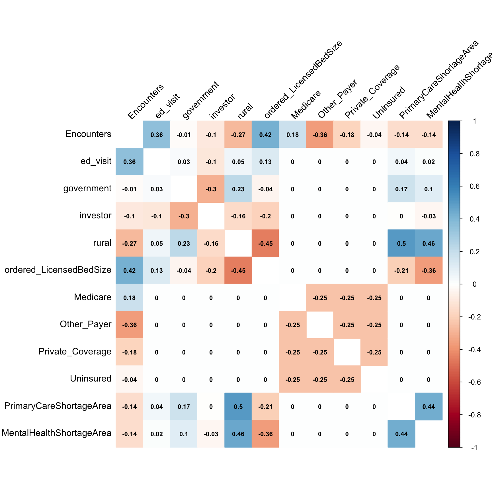
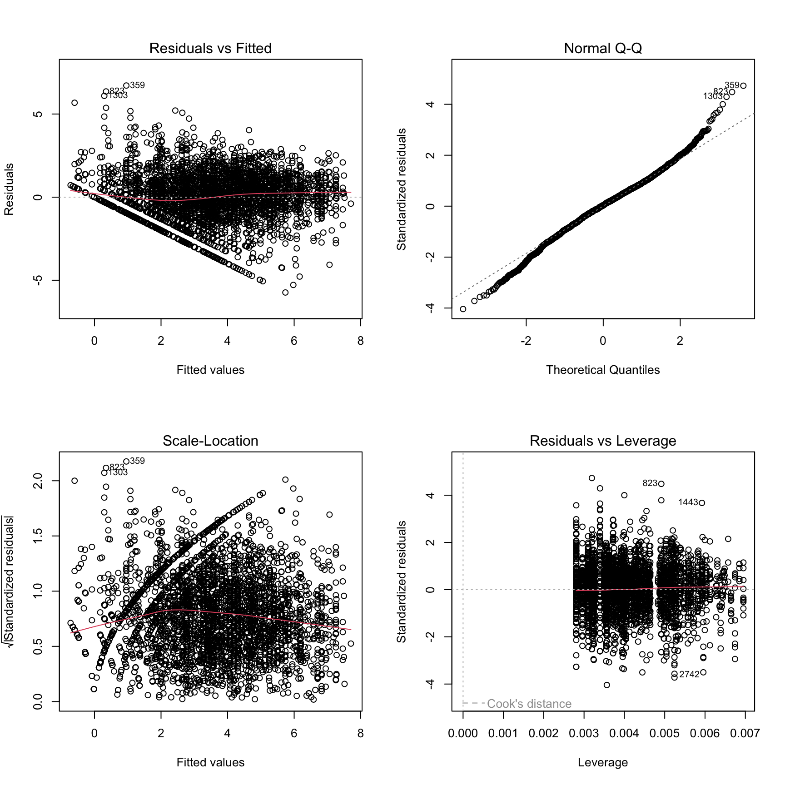

Regression Analysis
Yiying Wu
2023-11-26
Import Data & Recoding
First import data and create dummy variables for categorical variables.
dat <- read_csv("2019-2020-homeless-ip-and-ed-by-facility.csv")|>
filter(HomelessIndicator == "Homeless")|>
filter(Demographic=="Payer")
### EncounterType
dat$ed_visit <- ifelse(dat$EncounterType=="ED Visits",1,0)
### Ownership
# dat$Ownership_type <- as.factor(dat$Ownership)
dat$government <- ifelse(dat$Ownership=="Government",1,0)
dat$investor <- ifelse(dat$Ownership=="Investor",1,0)
### Urban_Rural
dat$rural <- ifelse(dat$Urban_Rural=="Rural/Frontier",1,0)
### LicensedBedSize
## the first level will be treated as ref
dat$LicensedBedSize <- as.factor(dat$LicensedBedSize)
dat$ordered_LicensedBedSize <- ordered(dat$LicensedBedSize,
levels = c("1-99","100-199","200-299","300-399","400+"))
## Payer
# unique(dat$DemographicValue)
# "Medi-Cal" "Medicare" "Other Payer" "Private Coverage" "Uninsured"
# dat$Payer_type <- as.factor(dat$DemographicValue)
dat$Medicare <- ifelse(dat$DemographicValue=="Medicare",1,0)
dat$Other_Payer <- ifelse(dat$DemographicValue=="Other Payer",1,0)
dat$Private_Coverage <- ifelse(dat$DemographicValue=="Private Coverage",1,0)
dat$Uninsured <- ifelse(dat$DemographicValue=="Uninsured",1,0)
# PrimaryCareShortageArea
dat$PrimaryCareShortageArea <- ifelse(dat$PrimaryCareShortageArea == "Yes",1,0)
# MentalHealthShortageArea
dat$MentalHealthShortageArea = ifelse(dat$MentalHealthShortageArea == "Yes",1,0)The dummy variables and corresponding descriptions are as follows.
| Variable | Description | Value |
|---|---|---|
| ed_visit | Dummy variable for EncounterType | 1=ED Visits, 0=Inpatient Hospitalizations |
| government | Dummy variable for Ownership, reference group: Non-Profit | 1=Government, 0=Otherwise |
| investor | Dummy variable for Ownership, reference group: Non-Profit | 1=Investor, 0=Otherwise |
| rural | Dummy variable for Urban_Rural | 1=Rural/Frontier, 0=Urban |
| Medicare | Dummy variable for Payer, reference group: Medi-Cal | 1=Medicare, 0=Otherwise |
| Other_Payer | Dummy variable for Payer, reference group: Medi-Cal | 1=Other Payer, 0=Otherwise |
| Private_Coverage | Dummy variable for Payer, reference group: Medi-Cal | 1=Private Coverage, 0=Otherwise |
| Uninsured | Dummy variable for Payer, reference group: Medi-Cal | 1=Uninsured, 0=Otherwise |
| PrimaryCareShortageArea | Dummy variable for Primary Care Shortage Area | 1=Yes, 0=No |
| MentalHealthShortageArea | Dummy variable for Mental Health Shortage Area | 1=Yes, 0=No |
Univariate Analysis
We conducted univariate analyses to identify individual factors
associated with outcomes Encounters.
# Function to round all numeric columns in a dataframe
round_df <- function(df, digits) {
df %>% mutate(across(where(is.numeric), ~ round(., digits)))
}
# Create tidied summaries for each model and round them
### EncounterType
tidy_ed_visit <- round_df(broom::tidy(lm(Encounters ~ ed_visit, data = dat)), 4) %>%
mutate(Model = "EncounterType")
### Ownership
tidy_Ownership <- round_df(broom::tidy(lm(Encounters ~ government+investor, data = dat)), 4) %>%
mutate(Model = "Ownership")
### Urban_Rural
tidy_Urban_Rural <- round_df(broom::tidy(lm(Encounters ~ rural, data = dat)), 4) %>%
mutate(Model = "Urban_Rural")
### LicensedBedSize
tidy_LicensedBedSize <- round_df(broom::tidy(lm(Encounters ~ ordered_LicensedBedSize, data = dat)), 4) %>%
mutate(Model = "LicensedBedSize")
## Payer
tidy_Payer <- round_df(broom::tidy(lm(Encounters ~ Medicare+Other_Payer+Private_Coverage+Uninsured, data = dat)), 4) %>%
mutate(Model = "Payer")
## PrimaryCareShortageArea
tidy_PrimaryCareShortageArea <- round_df(broom::tidy(lm(Encounters ~ PrimaryCareShortageArea, data = dat)), 4) %>%
mutate(Model = "PrimaryCareShortageArea")
## MentalHealthShortageArea
tidy_MentalHealthShortageArea <- round_df(broom::tidy(lm(Encounters ~ MentalHealthShortageArea, data = dat)), 4) %>%
mutate(Model = "MentalHealthShortageArea")
# Combine all tidied summaries into one table
combined_table <- bind_rows(tidy_ed_visit, tidy_Ownership, tidy_Urban_Rural, tidy_LicensedBedSize,tidy_Payer,tidy_PrimaryCareShortageArea,tidy_MentalHealthShortageArea)
# Output the table
knitr::kable(combined_table)| term | estimate | std.error | statistic | p.value | Model |
|---|---|---|---|---|---|
| (Intercept) | 113.3847 | 16.9823 | 6.6767 | 0.0000 | EncounterType |
| ed_visit | 304.8019 | 25.9232 | 11.7579 | 0.0000 | EncounterType |
| (Intercept) | 263.6639 | 18.0567 | 14.6020 | 0.0000 | Ownership |
| government | 86.0345 | 36.9317 | 2.3296 | 0.0199 | Ownership |
| investor | -106.1053 | 29.3750 | -3.6121 | 0.0003 | Ownership |
| (Intercept) | 286.9311 | 14.4262 | 19.8896 | 0.0000 | Urban_Rural |
| rural | -225.6865 | 33.1507 | -6.8079 | 0.0000 | Urban_Rural |
| (Intercept) | 307.9611 | 13.6275 | 22.5984 | 0.0000 | LicensedBedSize |
| ordered_LicensedBedSize.L | 417.5270 | 30.8155 | 13.5493 | 0.0000 | LicensedBedSize |
| ordered_LicensedBedSize.Q | 21.6599 | 30.8008 | 0.7032 | 0.4820 | LicensedBedSize |
| ordered_LicensedBedSize.C | 27.6094 | 29.9760 | 0.9211 | 0.3571 | LicensedBedSize |
| ordered_LicensedBedSize^4 | 19.9924 | 30.2878 | 0.6601 | 0.5092 | LicensedBedSize |
| (Intercept) | 783.0313 | 27.3966 | 28.5814 | 0.0000 | Payer |
| Medicare | -571.6921 | 38.7446 | -14.7554 | 0.0000 | Payer |
| Other_Payer | -744.7398 | 38.7446 | -19.2218 | 0.0000 | Payer |
| Private_Coverage | -730.2289 | 38.7446 | -18.8472 | 0.0000 | Payer |
| Uninsured | -647.5354 | 38.7446 | -16.7129 | 0.0000 | Payer |
| (Intercept) | 269.6129 | 15.3902 | 17.5185 | 0.0000 | PrimaryCareShortageArea |
| PrimaryCareShortageArea | -90.5770 | 29.0509 | -3.1179 | 0.0018 | PrimaryCareShortageArea |
| (Intercept) | 287.9196 | 16.5595 | 17.3870 | 0.0000 | MentalHealthShortageArea |
| MentalHealthShortageArea | -115.0393 | 26.8592 | -4.2830 | 0.0000 | MentalHealthShortageArea |
Description
- EncounterType Model: The increase in the number of encounters for each additional emergency department visit. It is highly significant (p < 0.0001), suggesting a strong relationship between emergency department visits and the number of encounters.
- Ownership Model: The differences in the number of encounters for government-owned and investor-owned facilities compared to the Non-Profit facilities. Both coefficients are significant (p < 0.0001), indicating that ownership type is an important predictor of encounters.
- Urban_Rural Model: The difference in the number of encounters between Rural/Frontier and Urban facilities. The negative coefficient suggests that Rural/Frontier facilities have fewer encounters than urban ones, and this is highly significant (p < 0.0001).
- LicensedBedSize Model: Coefficients (L, Q, C, ^4) represent the linear, quadratic, cubic, and quartic terms in a polynomial regression model for ordered bed sizes. The ‘L’ term has a highly significant positive coefficient, indicating an initial increase in encounters with bed size. However, the lack of significance in the cubic (‘C’) terms, and the non-significant quadratic (‘Q’) and quartic term (‘^4’), suggests that the relationship might not be strongly non-linear or that there is insufficient data to detect higher-order non-linearities.
- Payer Model: The differences in the number of encounters for Medicare payers, private coverage payers, uninsured payers, and other payers compared to Medi-Cal payers. All coefficients are significant (p < 0.0001), indicating that payer type is an important predictor of encounters.
- PrimaryCareShortageArea Model: The differences in the number of encounters between primary care shortage areas and the areas without primary care shortage. The negative coefficient suggests that primary care shortage area have fewer encounters , and this is highly significant (p = 0.0018).
- MentalHealthShortageArea Model: The differences in the number of encounters between mental health shortage areas and the areas without mental health shortage. The negative coefficient suggests that mental health shortage have fewer encounters , and this is highly significant (p < 0.0001).
Correlation Matrix
Since ordered_LicensedBedSize is ordinal data, we use
Spearman correlation coefficients when constructing correlation
matrix.
dat1 <- dat %>%
mutate(ordered_LicensedBedSize = as.numeric(ordered_LicensedBedSize)) %>%
dplyr::select(Encounters,ed_visit, government, investor, rural, ordered_LicensedBedSize, Medicare,Other_Payer,Private_Coverage,Uninsured,PrimaryCareShortageArea,MentalHealthShortageArea)
correlation_matrix <- cor(dat1, method = "spearman", use = "complete.obs")
# Visualize
corrplot(correlation_matrix, method = "color", addCoef.col = "black", tl.col = "black", tl.srt = 45, insig = "blank" , number.cex = 0.7, diag = FALSE)
Description
- the variable
ruralseems to have a moderately positive correlation withPrimaryCareShortageArea(0.5), suggesting that rural areas are more likely to be primary care shortage area. ruralhas a strong negative correlation withordered_LicensedBedSize(-0.45), implying that rural facilities are likely to have fewer licensed beds.- Correlation between all variables are below 70%, indicating that it is less likely that collinearity will pose a problem for the regression model.
Yeo-Johnson transformation\(^1\)
Since Encounters can be 0, use Yeo-Johnson
transformation instead of Box-Cox transformation.
# Shift the response variable to ensure all values are positive
shift_constant <- abs(min(dat$Encounters)) + 1 # Ensure the minimum value is at least 1
dat$Encounters_shifted <- dat$Encounters + shift_constant
# Fit the model with the shifted response variable
fit2_shifted <- lm(Encounters_shifted ~ ed_visit + government+investor + rural + ordered_LicensedBedSize + Medicare+Other_Payer+Private_Coverage+Uninsured+PrimaryCareShortageArea+MentalHealthShortageArea, data = dat)
# Apply Box-Cox transformation on the shifted response variable
bc_shifted <- MASS::boxcox(fit2_shifted, lambda = seq(-2, 2, by = 0.1))
Yeo-Johnson method applies a transformation by raising
Encounters_shifted to different power, as we can see above,
\(\lambda\) is close to 0, so we need
to do natural logarithm transformation, turn
Encounters_shifted into
ln(Encounters_shifted).
Multivariable Regression Model
dat = dat %>%
mutate(ln_Encounters = log(Encounters_shifted, base = exp(1)))
model = round_df(broom::tidy(lm(ln_Encounters ~ ed_visit + government+investor + rural + ordered_LicensedBedSize + Medicare+Other_Payer+Private_Coverage+Uninsured+PrimaryCareShortageArea+MentalHealthShortageArea, data = dat)) ,4)
fit= lm(ln_Encounters ~ ed_visit + government+investor + rural + ordered_LicensedBedSize + Medicare+Other_Payer+Private_Coverage+Uninsured+PrimaryCareShortageArea+MentalHealthShortageArea, data = dat)
knitr::kable(model)| term | estimate | std.error | statistic | p.value |
|---|---|---|---|---|
| (Intercept) | 4.9915 | 0.0638 | 78.1905 | 0.0000 |
| ed_visit | 1.4324 | 0.0485 | 29.5633 | 0.0000 |
| government | 0.2086 | 0.0687 | 3.0379 | 0.0024 |
| investor | -0.1227 | 0.0567 | -2.1618 | 0.0307 |
| rural | -0.8228 | 0.0825 | -9.9777 | 0.0000 |
| ordered_LicensedBedSize.L | 1.5354 | 0.0667 | 23.0103 | 0.0000 |
| ordered_LicensedBedSize.Q | -0.4421 | 0.0590 | -7.4984 | 0.0000 |
| ordered_LicensedBedSize.C | 0.2738 | 0.0560 | 4.8910 | 0.0000 |
| ordered_LicensedBedSize^4 | 0.0633 | 0.0559 | 1.1321 | 0.2577 |
| Medicare | -1.0874 | 0.0742 | -14.6476 | 0.0000 |
| Other_Payer | -3.4103 | 0.0742 | -45.9352 | 0.0000 |
| Private_Coverage | -2.6255 | 0.0742 | -35.3642 | 0.0000 |
| Uninsured | -2.0046 | 0.0742 | -27.0008 | 0.0000 |
| PrimaryCareShortageArea | -0.1903 | 0.0641 | -2.9685 | 0.0030 |
| MentalHealthShortageArea | 0.2431 | 0.0580 | 4.1951 | 0.0000 |
Description
- Coefficients:
ed_visit: This predictor has a positive estimated coefficient of 1.4324, suggesting that there is a positive association between ed_visit and the response variable. Given the p-value is practically zero, this relationship is statistically significant.government: The positive coefficient of 0.2086 for government implies a positive effect on the response variable, which is statistically significant based on the p-value (p=0.0024).investor: This predictor has a negative coefficient of -0.1227, suggesting a negative association with the response variable, which is statistically significant based on the p-value (p=0.0307).rural: The coefficient of -0.8228 indicates a strong negative relationship with the response variable, and the p-value confirms that this relationship is statistically significant.ordered_LicensedBedSize.L(Linear term): The positive coefficient of 1.5354 for this term suggests a significant positive linear trend related to ordered_LicensedBedSize and the response variable.ordered_LicensedBedSize.Q(Quadratic term): The negative coefficient of -0.4421 suggests that the relationship between ordered_LicensedBedSize and the response variable has a significant quadratic component, indicating a curved relationship.ordered_LicensedBedSize.C(Cubic term): The cubic term has a positive coefficient of 0.2738 and a statistically significant p-value, indicating a cubic relationship is present.ordered_LicensedBedSize^4: The fourth-degree polynomial term is not statistically significant (p-value=0.2577) and has a small estimated effect (0.0633), suggesting that it may not be a useful predictor in the model.Medicare,Other_Payer,Private_Coverage,Uninsured: All payer types show a negative association with the number of encounters compared to Medi-Cal, with very strong statistical significance.PrimaryCareShortageArea: Being in a primary care shortage area is negatively associated with the number of encounters, which is statistically significant.MentalHealthShortageArea: Being in a mental health shortage area is positively associated with the number of encounters, which is statistically significant.
- Model Fit: The Multiple R-squared value of 0.5897 suggests that approximately 58.97% of the variability in Encounters is explained by the model.
Model Diagnostics
par(mfrow = c(2,2))
plot(fit)
Description
The quartet of plots above demonstrates consistent variance of residuals across different fitted values, indicating homoscedasticity. The spread of residuals remains stable across the range of predictions, and their mean hovers around zero, indicating no systematic bias. Although there are minor fluctuations around the zero line, they are within an acceptable range, suggesting that the residuals are well-behaved. Additionally, the distribution of residuals appears to be normal, with no single observation exerting undue influence on the model. These observations collectively suggest that the key assumptions required for a valid linear regression model have been met.
Conclusions
Our comprehensive regression analysis has successfully identified several key drivers influencing healthcare encounters. The utilization of dummy variables has allowed for a nuanced understanding of how categorical variables such as EncounterType, Ownership, Urban vs. Rural location, and Payer types correlate with the frequency of healthcare encounters.
From the univariate analyses, we discerned that emergency department visits significantly increase healthcare encounters. Ownership type, particularly government-owned facilities, showed an increase in encounters, whereas investor-owned facilities displayed a decrease when compared to non-profit entities. Rural locations, in contrast to urban areas, tend to have fewer encounters.
The multivariable regression model revealed a strong, positive correlation between the number of licensed beds in a facility and the encounter rate. Interestingly, while Medicare, private coverage, and uninsured statuses led to fewer encounters compared to Medi-Cal, being in a primary care shortage area also negatively impacted the encounter rate. However, a mental health shortage area showed a positive impact on encounters, suggesting a potential increase in service demand in such regions.
The correlation matrix further illuminated these relationships, showing a moderate to strong correlation between being in a rural area and facing primary care shortages, while also indicating a tendency for rural facilities to have fewer licensed beds.
Our model diagnostics confirmed the homoscedasticity of residuals, showing that the variability of residuals is consistent across the spectrum of fitted values. This indicates that the model’s assumptions are satisfied, and the predictions made can be considered reliable.
In summary, our analysis has highlighted the multifaceted nature of healthcare encounters, revealing how facility type, geographic location, bed size, and insurance coverage collectively shape healthcare service utilization. These insights can serve as a foundation for policymakers and healthcare administrators to optimize resource allocation and improve healthcare delivery across diverse settings.
Reference
- Yeo, I. K., and Johnson, R. A. (2000). A new family of power transformations to improve normality or symmetry.